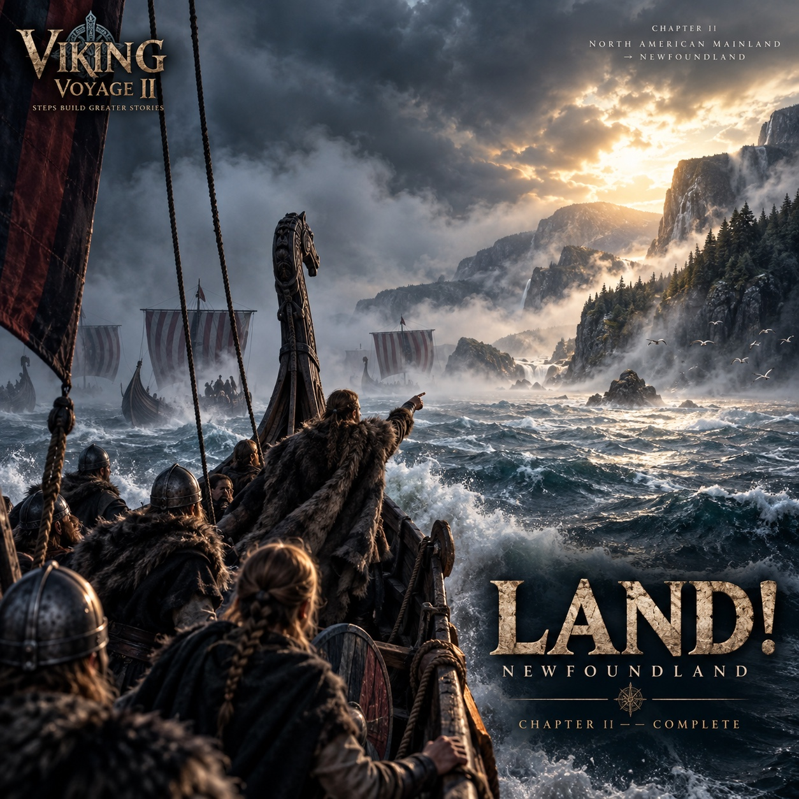

THE VOYAGE ARCHIVE · THE CAPTAIN'S LOG
DAY 18
The fleet reached Newfoundland. Chapter II was complete and the chapter was frozen into the voyage record.

CAPTAIN'S LOG · DAY 18
NEWFOUNDLAND REACHED.
The fleet reached Newfoundland on Day 18 with 30,701,056 cumulative steps. The crew added 4,823,183 steps during the day.
Chapter II — North American Mainland to Newfoundland — was complete. Any progress beyond the landfall belonged to what came next.
ONE CHAPTER CLOSES.
THE NEXT WAITS BEYOND THE SHORE.
— Captain Hákon